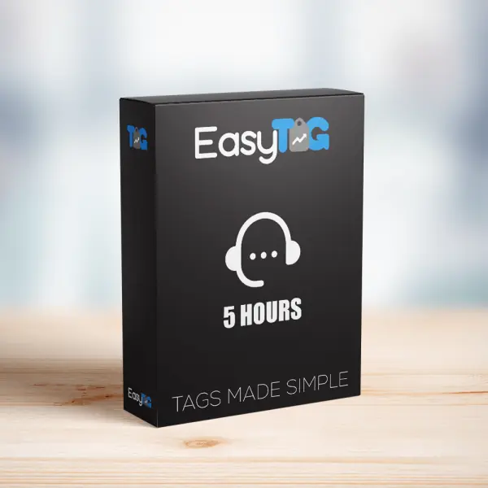

![Easy Tag]()
Google Consent Mode v2: configurazione con GTM e dataLayer
Il riferimento ufficiale è la guida Google sul Consent Mode.
Cos’è Google Consent Mode v2
Google Consent Mode v2 è il framework con cui i tag di Google — GA4, Google Ads e Floodlight — adattano lettura e scrittura dei cookie allo stato scelto sul banner della CMP. Dal marzo 2024, nello Spazio Economico Europeo, è il passaggio richiesto per non perdere remarketing, Enhanced Conversions e la qualità dello Smart Bidding.
Non sostituisce il banner. Traduce la scelta legale dell’utente verso gli script di misura. Senza questo ponte, il banner e i tag non si parlano: è il caso che copre la scheda Consent Mode v2.
In sintesi. Se dopo il banner le conversioni Ads crollano e il CPA sale, il problema di solito non è la campagna. I tag sono stati bloccati del tutto prima del consenso, invece di partire in modalità Advanced con parametri denied. In quello stato Google può modellare una parte delle conversioni di chi rifiuta i cookie, fino a circa il 70% nei casi che Google documenta per la modellazione, senza trattarle come consensi.
I quattro parametri del Consent Mode v2
Rispetto alla prima versione, la v2 aggiunge due segnali sulla profilazione. Sono i quattro valori che il dataLayer deve comunicare a Google. Ognuno accetta solo denied o granted.
| Parametro | Ambito | Effetto |
|---|---|---|
ad_storage | Archiviazione pubblicitaria | Lettura e scrittura dei cookie ads, per esempio _gcl_aw, per attribuire il clic. |
analytics_storage | Archiviazione analitica | Cookie statistici (_ga, _ga_*) per sessioni e durata in GA4. |
ad_user_data | Dati utente verso Google | Invio di dati usati in pubblicità, compresi gli identificativi di clic e i dati hashed delle Enhanced Conversions. |
ad_personalization | Annunci personalizzati | Uso dei dati per remarketing, pubblici e retargeting dinamico. Vedi Dynamic Remarketing. |
Basic e Advanced: il blocco preventivo
L’errore più comune è fermare il contenitore di Google Tag Manager, o i singoli tag GA4 e Google Ads, con uno script finché la persona non clicca «Accetta». Equivale alla modalità Basic, o a un blocco cieco, e toglie a Google il segnale su cui modellare.
- Basic. I tag restano spenti fino al clic sul banner. Se la persona rifiuta o ignora il banner, Google non riceve nulla: niente modellazione.
- Advanced, quella che usiamo. I tag partono subito, con i quattro parametri a
denied. Non leggono né scrivono cookie identificativi. Inviano ping senza cookie: timestamp, user agent, URL di provenienza, eventuale GCLID o GBRAID e lo stato del consenso.
Con quei ping, la modellazione comportamentale in GA4 e la modellazione delle conversioni in Google Ads stimano le conversioni di chi non ha acconsentito, a partire da chi ha accettato, senza considerare il rifiuto come un sì.
Ordine nel dataLayer e in GTM
Il comando default deve girare prima dello snippet di Google Tag Manager (gtm.js) o di gtag.js. Se la CMP ha già un template che emette il consenso in Consent Initialization, non va duplicato a mano.
1. Stato predefinito, consent default
Nell’, prima del contenitore:
wait_for_update trattiene i primi hit per 500 millisecondi, così la CMP può leggere un consenso già salvato e non parte un denied seguito subito da granted.
2. Aggiornamento, consent update
Al clic su «Accetta» o sulla scelta personalizzata, la CMP deve aggiornare lo stato. L’evento cookie_consent_update serve ai tag che non capiscono il Consent Mode, per esempio Meta:
function onUserConsentAccepted(preferences) {
gtag('consent', 'update', {
'ad_storage': preferences.marketing ? 'granted' : 'denied',
'analytics_storage': preferences.statistics ? 'granted' : 'denied',
'ad_user_data': preferences.marketing ? 'granted' : 'denied',
'ad_personalization': preferences.marketing ? 'granted' : 'denied'
});
window.dataLayer.push({ event: 'cookie_consent_update' });
}3. Trigger in GTM
- Tag Google (GA4, conversione Ads, remarketing): trigger normali, Initialization, All Pages o l’evento di conversione. Non vanno bloccati con una condizione sul consenso. Il tag adatta da solo la richiesta:
gcs=G100se negato,gcs=G111se concesso. - Tag di terze parti (Meta, LinkedIn, Hotjar): non leggono il Consent Mode. In GTM serve l’Additional Consent, per esempio su
ad_storage, e un trigger sucookie_consent_update. Il TAG Facebook e il TAG LinkedIn dello shop vanno accesi solo dopo quell’evento.
Verifica in Anteprima e Tag Assistant
Non dare per buona la CMP, né Iubenda né Cookiebot né OneTrust, solo perché il plugin è installato. In finestra anonima, Anteprima di GTM, scheda Consent.
- Consent Initialization prima di Container Loaded. On-page Default deve essere
Deniedsui quattro parametri. Se èGrantedprima del clic, la pagina non rispetta il consenso preventivo. - I tag Google partono anche se lo stato è denied. Su Container Loaded, GA4 e Google Ads stanno in Tags Fired. Nella richiesta verso
google-analytics.com/g/collect,gcsvaleG100. - Secondo evento Consent dopo il clic. On-page Update e Current State passano a
Granted.
Va rifatto l’audit quando cambi CMP o tema, o quando gli ordini del backend (Shopify, WooCommerce, PrestaShop) e le conversioni Ads divergono di circa il 25–30%. In quel caso si parte dal Supporto 5 ore o dal preventivo Consent Mode v2.
FAQ sul Consent Mode
Comandi default e update
Cos'è il Consent Mode nella Tag Platform di Google?
È il modo in cui i tag Google ricevono lo stato del consenso e adattano cookie, identificativi e ping. Non sostituisce il banner: legge la scelta che il banner ha raccolto. Il pacchetto di implementazione è Consent Mode v2.
Quali parametri di consenso gestisce il Consent Mode?
ad_storage: storage pubblicitario.analytics_storage: storage di analisi.ad_user_data: dati utente per finalità pubblicitarie.ad_personalization: personalizzazione degli annunci e remarketing.- Dove servono:
functionality_storage,personalization_storage,security_storage.
Qual è la differenza tra default e update?
default è lo stato iniziale, prima che i tag partano. Nelle aree a consenso preventivo è spesso denied. update arriva quando la persona accetta o rifiuta nel CMP e sostituisce quello stato.
Perché il default va impostato prima che partano i tag?
Perché un tag partito prima del default può scrivere cookie in contrasto con la scelta iniziale. I tag dello stesso evento devono leggere un solo stato, coerente. L'ordine rispetto alla coda è quello del DataLayer.
Perché il Consent Mode non si configura con un tag HTML personalizzato?
Un HTML personalizzato scatta in un momento non allineato alla coda e alla valutazione dei tag. Si usano le API di consenso di GTM o gtag('consent', ...) e l'integrazione del CMP.
Come fa GTM a far vedere lo stesso aggiornamento a tutti i tag?
Con le API di consenso e con i controlli già presenti nei modelli di tag nativi. L'update viene elaborato nell'ordine corretto rispetto ai messaggi in coda, non "quando capita".
Effetti del rifiuto, CMP e verifica
Cosa succede se analytics_storage è denied?
I tag di Google Analytics 4 non possono leggere o scrivere i cookie di analisi usati per riconoscere utente e sessione. Possono restare ping senza cookie, secondo la configurazione del Consent Mode.
Cosa succede se ad_storage, ad_user_data o ad_personalization sono denied?
Si limita lo storage pubblicitario, l'invio di dati utente a fini ads o la personalizzazione, remarketing incluso. I tag di Google Ads restano conformi alla scelta. La modellazione, dove prevista, non equivale a ignorare il rifiuto.
Cos'è una CMP e come si collega alla Tag Platform?
È il sistema che raccoglie e conserva la scelta. Si integra con GTM o gtag.js emettendo default e update, ed eventualmente il TCF v2.2. Senza questo ponte, il banner e i tag non si parlano: è il problema che chiude Consent Mode v2.
Quali problemi capitano con le implementazioni IAB TCF?
Stringhe o purpose non allineate, CMP che arriva dopo i tag, supporto TCF acceso a metà nei tag Google. Tag Assistant mostra lo stato letto davvero, non quello promesso dal plugin.
Come si verifica il Consent Mode in Tag Assistant?
Nella timeline, per ogni evento, si leggono Default e Update di ciascun parametro. Un tag non deve partire con uno stato diverso dalle regole impostate per quel momento.
Che ruolo ha il Consent Mode nel tagging lato server?
Lo stato viaggia anche verso il server container. I tag che partono dal server devono rispettare la stessa scelta, non una seconda policy.
Cosa significa il parametro gcs nelle chiamate di GA4?
gcs è lo stato di consenso compatto (G1xy). G100: ad_storage e analytics_storage negati. G111: entrambi concessi. G101: ads negato e analytics concesso. gcd porta lo stato codificato di tutti e quattro i parametri v2.
Perché il Consent Mode v2 non sistema Meta Ads o TikTok?
gtag('consent') è di Google. In GTM lo stato può bloccare un tag di terze parti, ma Meta chiede di non lanciare fbq('init') prima del consenso, o di usare fbq('consent', 'revoke') allineato alla CMP. Il TAG Facebook non va sull’All Pages se il consenso ads è negato.
Quando va rifatto l’audit del Consent Mode?
A ogni cambio di CMP o di tema, e quando gli ordini del CMS (Shopify, WooCommerce, PrestaShop) e le conversioni in Google Ads divergono di circa il 25–30%.
Da questa guida al prodotto
Se il banner non parla con i tag, si parte da una scheda. Se serve un intervento sul sito, dalle ore.


Supporto 5 ore
Verifica di default, update e tag che partono troppo presto.